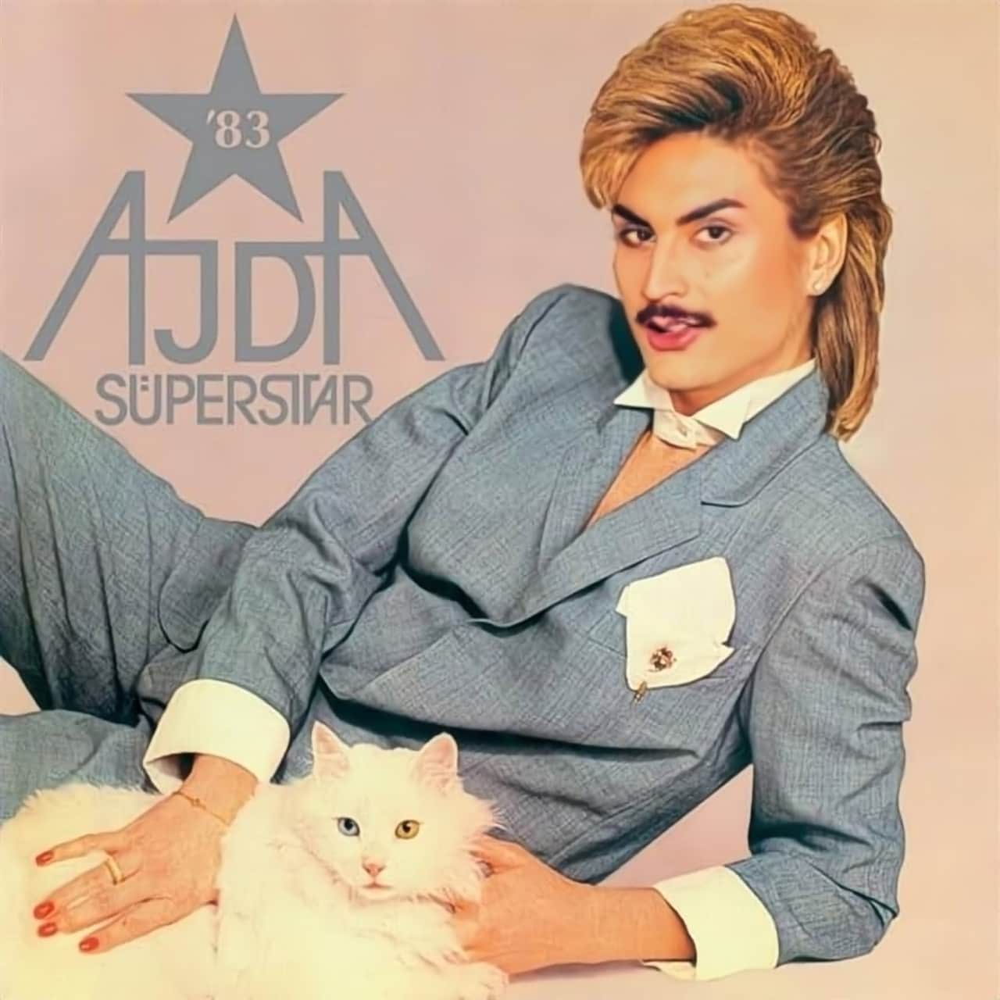

Orhun Mersin
a.k.a.
kekik
home
bio — contact
exhibitions
›
Dragging Banu Alkan
The Imaginary Intelligence (I.I.) w/ Nani Gutiérrez
Bitches on their Deen w/ Anna Ehrenstein
Ex-human
Smile to play
theatre
›
Apocalypso w/ Justin F. Kennedy
OceanFlight w/ Jonny-Bix Bongers
Attitude w/ Tomi Paasonen
drag
›
A drag lesbian take on Turkish oil wrestling
Stadtbild reimagined
Zor Kadınlar: a drag mother to the mother
kekik x kimyon
Automatized Mashallah
Dragging Yeşilçam Erotica
workshops
›
Unlearning and Dragging: Speculative practices within AI w/ Yağmur Uçkunkaya
Fantasizing through drag, dreaming with deepfakes
publications
›
Dragging the Latent: Reimagining Artifical Intelligence from Within
Investigating Gender Bias in Turkish LLMs
